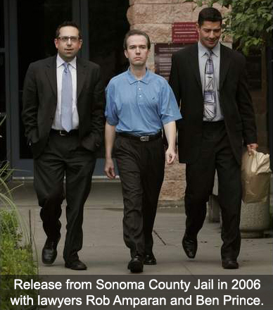

John Mark Karr
Sanchez ©2007

Being arrested in 2006 was what I had successfully avoided for 10 years since her death and for the 5 years of international running as a fugitive leading up to my 2006 arrest. The proof of that was the fact that I was in my 5th year of evading California authorities and the FBI when I was arrested against my will in 2006.
Media Lies and Law Enforcement Blunders That Have Granted Me Immunity for Life
My name is John Mark Karr. I am the creator and author of this site as well as the designer of the photography here. I have lived a very covert life outside the US since the summer of 2020. Since my first departure from America in 2001, my strategy for remaining private and safe has always consisted of constantly staying on the move and vowing never to return to America again. I have paid dearly for parting from that plan in the past. The most recent span living in the US, from 2017 to 2020, is amongst my deepest regrets. I consider myself lucky to have survived it, in more ways than one.
This site is a small portion of my life story. It only covers the legal and media aspects of my life. I only touch on a few of the investigations that have been launched against me over the years by the FBI, Interpol, DHS and local authorities worldwide. I even touch on the complete blunders that some calling themselves "law enforcement" have made about me over the years - namely a fool puppet district attorney in Boulder Colorado in 2006. On the other hand, I've never considered the FBI, DHS, or Interpol to be incompetent as it relates to their international serial murder investigations or international abduction network investigations they've launched against me over the years. I acknowledge that these three agencies are among the most sophisticated and powerful law enforcement entities in the world.
Mostly, it's the powerful media that controls the narrative about me. This little website doesn't come close to their media monster websites and mighty TV networks. It's been said, those who control the narrative, control the world. I am far from controlling the narrative about John Mark Karr. The main reason is that I've been completely silenced by the media with the exception of the occasional phone call with reporters who promise the call is "off the record" but instead proceed to misquote me about everything I said and print it, or the outright lies that I've done interviews that I haven't done. Sure, the media might let me say a sentence or two but be certain, they will sabotage statements or comments I might say to suit their own anti-Karr agenda. For future references, due to a very bad experience I had in September 2023 - if you're the media and you promise the bullshit "off the record" call in an attempt to hijack what you will then publish as "an interview", you can go to hell.
Aside from the time I was set free by the blundering idiots of law enforcement in Boulder Colorado in 2006, the media and their adoring public have set me free for almost two decades with their stupid lies that make me look like an absolute idiot. In a sense, the media, and the public who perpetuates their lying narrative, have granted me permanent immunity against any and all murder charges and subsequent convictions that might come my way, for the rest of my life. If the media says I was a delusional, lying sack of shit in 2006, about a high class little girl they think I was too pathetic to even meet, the public latches on to that lie and now promotes it on social media, adding their own lies in their posts about me on platforms like Facebook, Reddit, and X.
Blundering law enforcement, the media and their lies, and the public that has perpetuated the whole process, are the real idiotic fools. Why? Because these damned idiots have granted me a lifetime of legal immunity. To all of you, I say the following: Thank you for setting me free. Thank you for making my life impossible in America, which led me to a safer and better life outside the US. Most of all, thank you for being the stupid idiots you have portrayed me as being for 17 years.
In the words of a surrendering Confederate officer to Union General Joshua Lawrence Chamberlain after the ceremony at Appomattox, I share his sentiments with my own enemies when he said, "You may forgive us but we won’t be forgiven. There is a rancor in our hearts which you little dream of. We hate you, sir."
I Know Who JonBenet Ramsey's Killer Was and I'm Protecting Them? Think Again!
A reporter from The U.S. Sun alerted me via e-mail that there was a supposed interview with me and News Nation. This is a complete lie. I have never done an interview with News Nation in my life. Furthermore, I have never said that another person killed JonBenet Ramsey and I know who that person is. We live in the age of AI and other technological sabotage that many of us are subjected to beyound our control. If you see me on camera, live, making a complete statement, that's not a soundbite, or taken out of context - you can take that seriously. Otherwise, always doubt anything you read or see about me. It is the media's backstabbing technique reserved especially for me as a pure act of sabotage. Do you want truth or some news media hyped concoction?
And who is this person who killed JonBenet Ramsey that all of you in the public and the media insist that I know and now protect? Her brother? Her father? Her loving mother? I know you would love to see but one of them burn for this child's death. I know it because you have expressed it for decades. I have never suggested that anyone in this family was the killer of this little girl. Has this discussion ever come up with those I have spoken to over the years? Of course. The reason being, these three people have been targets for all these years as suspects in their own family member's death. This is not "the moment you've all been waiting for" when I raise my finger of blame and condemnation and point it at any of the members of JonBenet's family.
In 2006, I took full responsibility for the death of JonBenet Ramsey. In an intense phone call with a professor in Boulder Colorado, I described how I killed JonBenet Ramsey, by my own hand. These descriptions corroborated with physical evidence that was withheld from the public by the coroner and law enforcement for ten years. According to the authorities who arrested me, as well as the FBI - it was information only the killer would know. This is why I, and no one else, was arrested for the murder, kidnapping, and sex assault of JonBenet Ramsey. (October 05, 2023 - Updated 12/04/23 to add that an e-mail from a reporter with The U.S. Sun was the source for my reaction.)

Arrested for the Murder of JonBenet Ramsey
In 2006, I was arrested for the murder, kidnapping, and sex assault of six year old JonBenet Ramsey and extradited from Bangkok to Boulder Colorado. My arrest was based on my account of the night of her death that corroborated with physical evidence withheld from the public by the coroner and law enforcement from 1996 to 2006.
I was released based solely on the fact that my DNA did not match DNA found on her clothing yet not on her body. Though I was ultimately discounted as a lying, lunatic, attention seeking whore, these were not the reasons I was released. It all boiled down to a DNA test. How could a person who had been in hiding for five years and using a pseudonym with his informants manage to cash in on this fame? After all, I did not turn myself in. I didn’t phone CNN. I didn’t turn myself in when I was last in Boulder in 2000. I didn’t cash in on all that supposed fame for ten damned years but I was an attention seeking whore? If I became notorious, it was thrust upon me against my will by the media who showed up like a pack of hungry wolves. So I am to blame for something I didn’t do? Wouldn’t be the first time.
The prosecution finally said she didn’t bring me back on charges at all though strangely, I attended an extradition hearing in a packed, media covered Los Angeles California courtroom where a judge read off all five of the charges in Colorado and asked if I wanted to waive to extradition on those five charges. He read the charges individually. They included such terms as murder in the first degree, kidnapping, and sex assault. I assure you, Ms. Lacy, the charges were real.
I was last questioned by private detectives regarding the Ramsey case in 2009 with light contact from private detectives in 2014 but with no questions about the Ramsey case. In 2016, I was lightly questioned by a past agent of the Colorado Bureau of Investigation about this case.
While I'm on the topic of my 2006 arrest for the murder of JonBenet Ramsey, I want to get a few things straight about multiple myths and outright lies that have been told about me over the years. Keep in mind that this section was added to my website in January 2023.
My arrest was not based on a mere confession. My arrest was based on very detailed information that I provided. Furthermore, I was led to believe that all correspondences and phone calls were in strictest confidence by the only person I was talking to: Michael Tracey. The information I provided corroborated with evidence withheld by the coroner and law enforcement for ten years in this case. The investigation lasted for several months prior to my arrest. On my extradition flight from Long Beach, California to Boulder, then assistant district attorney Tom Bennett, who accompanied me on the flight, informed me that, over a ten year period since her death, they had received over 250 false confessions. He said he did not consider my in depth descriptions of the final hours of her life leading up to her death to be false. He continued by saying, "You are very valuable to us, Mr Karr."
I did not provide detailed information about the final hours of JonBenet Ramsey's life because I was a delusional person. I had no mental health history prior to 2006 or since. I have never been diagnosed with any mental illness. Yes, it is true that my mother suffered from mental issues but how dare all of you to blame me for her issues and accuse me of certainly inheriting it. That is totally unfair to me as a person who has always been known as mentally sound, with the exception of the mockery of my mental state as it related to my 2006 arrest.
I did not describe the final hours of the life of JonBenet Ramsey in depth to Michael Tracey because I wanted to be famous. What an appalling and ridiculous assertion that is. The facts that surround my arrest disprove this completely. I used the pseudonym, Daxis, on every correspondence and in every call with the only person I shared with: Michael Tracey. I made every effort not to be caught or have my identity exposed. How does one become famous if they are anonymous? Does a person seeking fame leave their home country; become a fugitive for 5 years; and make absolutely no contact with past friends or family for the 5 years that led up to my 2006 arrest? That would be a person trying to hide - not a person trying to be exposed and famous. Furthermore, if I wanted fame for killing a child, which is nothing less than suicide and is utterly stupid, why didn't I do this ten years prior? I did not because that concept is totally ridiculous and outrageous. Instead, I lived for five of the ten years as a fugitive in foreign countries outside of the US. Also keep in mind that I communicated with Michael Tracey for 4 years by anonymous e-mail. In those 4 years, I never brought up her death or spoke to him in phone calls until the end of that 4 year span of time. This was confirmed by Tracey himself in media interviews. In other words, I wasn't anxious to confess murder to Michael Tracey in that 4 year span of time and waited until the end of that 4 years to finally share with him about the night of JonBenet Ramsey's death.


I did not confess to murdering a child to get a free flight back to America. How totally ridiculous. I had substantial savings readily available to me had I wanted to return to America; however, I did not. Why would I? America was the country I had been running away from for 5 years. Every American who becomes stranded abroad can walk into a US embassy; surrender their passport for a temporary one; and receive a one way ticket back to America. Once they arrive in America, the citizen is required to pay back the price of the ticket to the US embassy to receive their original permanent passport back. They will not receive a further temporary passport until the debt is paid. With all that said, what fool would confess to murdering a child for a free ticket back to a country they had been a fugitive from for five years prior?
I did not turn myself in in 2006. I have never turned myself in in my entire life. There were multiple police at the funeral of Patsy Ramsey anticipating the arrival of someone named Daxis. This was according to Mark Spray who divulged the reason for the large police presence at her funeral. I had no plans to take the chance to return to America for her funeral because it was too risky for me. I did not want to be arrested after successfully being a fugitive for five years.
I did not confess to the murder of JonBenet Ramsey on camera in Thailand. On the next day AFTER my arrest in Thailand, I was taken before the press for a second time by authorities. I was asked several times if I had killed JonBenet Ramsey by members of the press. I finally and very reluctantly replied, "I was with JonBenet when she died. Her death was accidental." That was not a confession to murder. My brother and father were with my grandmother when she died. That doesn't mean they killed her.
I was not released because it was determined I was a delusional, lying, attention seeking whore. I was released on the mere fact that my DNA did not match DNA that law enforcement insisted belonged to the killer. Keep in mind that no DNA was found on her body that belonged to a stranger. The sample they have was found solely on her clothing that has been stored in an evidence room and has been handled over the years by several investigators. DNA experts commented on Fox News that no suspect should be released based solely on their DNA not matching the DNA the authorities held in this case. They referred to that DNA as a "red herring".
In summary, being arrested in 2006 was what I had successfully avoided for 10 years since her death and for the 5 years of international running as a fugitive leading up to my 2006 arrest. The proof of that was the fact that I was in my 5th year of evading California authorities and the FBI when I was arrested against my will in 2006. I did not want fame for killing a child. The media arrived from all over the world and descended in on me against my will. Am I to be blamed for this? I made every effort to avoid any detection of my true identity when I had talks with Michael Tracey on encrypted e-mails that hid my IP and in phone calls using SIM chips that did not require a passport ID at the time. All that I did in 2006 was talk to a person in what he guaranteed to me were confidential correspondences. I knew quite a few things that no one should have known had they not been in close proximity to JonBenet Ramsey on the night of her death, including the details of how she died. I shared those things in what I thought was in strictest confidence with Michael Tracey who broke that confidence and turned all of it over to law enforcement which resulted in my unwanted 2006 arrest - an arrest that destroyed five years of remaining free as a successful fugitive. Everything I had built up in that five years was lost completely when I was arrested in 2006. I did not want to be arrested for the murder of JonBenet Ramsey or for any other crime. I wanted to be free to live my life and continue my teaching career outside of America, which is exactly what I did for the five years prior to my 2006 arrest. Just prior to my 2006 arrest, I had just started a new job as a second grade teacher in a posh private school in Bangkok. I had just spent two weeks decorating my classroom which was beautiful with a glass wall on one side that viewed out onto palm trees. I was happy with my life. I was content. I had it all and lost it when my very unwanted arrest occurred.
PUBLIC STATEMENTS
What follows are statements I have released since 2016. When I have anything I consider important to say, I release a statement here. When and if I find out there are lies circulating about me in the media or I have something to say in response to other issues in the media related to me, I release those statements here. On rare occasions, I update statements which is indicated and dated.
I Know Who JonBenet Ramsey's Killer Was and I'm Protecting Them? Think Again!
A reporter from The U.S. Sun alerted me via e-mail that there was a supposed interview with me and News Nation. This is a complete lie. I have never done an interview with News Nation in my life. Furthermore, I have never said that another person killed JonBenet Ramsey and I know who that person is. We live in the age of AI and other technological sabotage that many of us are subjected to beyound our control. If you see me on camera, live, making a complete statement, that's not a soundbite, or taken out of context - you can take that seriously. Otherwise, always doubt anything you read or see about me. It is the media's backstabbing technique reserved especially for me as a pure act of sabotage. Do you want truth or some news media hyped concoction?
And who is this person who killed JonBenet Ramsey that all of you in the public and the media insist that I know and now protect? Her brother? Her father? Her loving mother? I know you would love to see but one of them burn for this child's death. I know it because you have expressed it for decades. I have never suggested that anyone in this family was the killer of this little girl. Has this discussion ever come up with those I have spoken to over the years? Of course. The reason being, these three people have been targets for all these years as suspects in their own family member's death. This is not "the moment you've all been waiting for" when I raise my finger of blame and condemnation and point it at any of the members of JonBenet's family.
In 2006, I took full responsibility for the death of JonBenet Ramsey. In an intense phone call with a professor in Boulder Colorado, I described how I killed JonBenet Ramsey, by my own hand. These descriptions corroborated with physical evidence that was withheld from the public by the coroner and law enforcement for ten years. According to the authorities who arrested me, as well as the FBI - it was information only the killer would know. This is why I, and no one else, was arrested for the murder, kidnapping, and sex assault of JonBenet Ramsey. (October 05, 2023 - Updated 12/04/23 to add that an e-mail from a reporter with The U.S. Sun was the source for my reaction.)
New Search in Portugal for Madeleine McCann
Portuguese authorities are conducting new searches for Madeleine McCann at the request of German authorities who named Christian Brueckner as a suspect in her disappearance 3 years ago. Madeleine will not be found. She is a thriving, happy young woman, planning her future. View on  (May 23, 2023)
(May 23, 2023)
Julia Wendelet's Claim that She is Madeleine McCann

On Tuesday 21 February, a contact sent a text message to me containing this news story from KFM 94.5's website entitled, "Is She Madeleine McCann? Polish Woman May Be Missing Toddler From 15 Years Ago." In it, a 21 year old woman named Julia Wendelet is showcased using information from her Instagram account @iammadeleinemccan (note how she misspells 'mccann'). You can be rest assured that Julia Wendelet is not the former Madeleine McCann. Madeleine has never been aware of her connection to the media coverage of the Madeleine McCann case. Has she ever seen it in her lifetime? Possibly, but she has never made any personal connection to the news stories over the years. Those involved in taking her were highly skilled, experienced, and well connected. With that said, consider that Madeleine was very well placed. And if she was very well placed, she was then and will be safe, well cared for, and loved. (February 22, 2023) (Read more in Lei Sussurra's article, Karr Contends Madeleine McCann is Alive)
UPDATE! Julia Faustyna aka Julia Wendelet has been claiming for weeks on Instagram and TikTok that she may be Madeleine McCann. Results of a DNA test show that she is 100% Polish. Madeleine is alive but she'll never be found in a sea of dead ends. (April 5, 2023)
Death Threat E-mail
On January 31st GMT, I received a death threat via e-mail from societysucks88@icloud.com with the subject field: "I want to cut your head off and stuff it up your p**ssy". The e-mail was submitted to the FBI. According to digital forensics, this death threat e-mail was sent from the vicinity of Coeur d’Alene, Idaho. The full name of the sender was included in the e-mail sender field and is listed in my Tweet below. A couple of days after my report, the FBI called my US phone number and left a message stating that they were interested in further details. I returned the FBI's call on the following day. I got an e-mail contact from the agent during the call that enabled me to send further information that might lead to the sender of the e-mail. I take death threats seriously. I will report all threats to the FBI, your local authorities, or both. Full email here: https://tinyurl.com/4ryrnzcd Statement on Twitter here. (February 1st 2023)
My Exit From America in 2020
In early summer 2020, I sold my house in America and left the United States. It was never any secret that my house was on the market for sale last year. At one point, it was listed on the MLS. I owned the house for only two years and ten months. In 2017, after living for only weeks in the house, I was exposed to the media by people I had allowed in my home as guests. I was portrayed by the media and treated by the public as a dangerous threat to society though I had never been convicted of a crime. After the 2017 media exposure, some asked me why I returned to America in the first place. I returned to the US in 2017 because I had every right to do so. I returned to the US in 2017 and bought a house there because I had every right to live in my own home, in my own country, as a citizen of the United States with full blown constitutional rights that is afforded to every natural born citizen who has never been convicted of a crime. I had those rights but, while there, that did not prevent some Americans from violating them wholesale - walking by my house shouting "Murderer!", "Killer!", "Serial Killer" and "Child Rapist" mostly occurring in broad daylight as I worked to restore my historical home which remains an asset to the community long after I am gone. I also had the right to sell my house and leave the United States in peace and in privacy without the media exploiting the event and without the accusation that I was running from something. I guarded the sale of my home when it occurred last year not because I was sneaking around like some lowly criminal but because of my concerns that the media would exploit the sale of the house as they had exploited the purchase of it which would have compromised not only my privacy but the privacy of the new owner of the home. After discovering recently that certain persons planned on profiting from and exploiting the release of this information, I reluctantly decided to post this statement on my website almost seven months after the fact. I was never then nor am I now in any way obligated to inform you: my haters, my enemies, and to whom it may concern - but here it is nonetheless. (January 13th 2021)
My Brush With Kamala Harris
In 2010, I was accused of everything from felony death threats to being a sex cult leader. Fox News reported that there was a warrant out for my arrest and that the police in San Francisco were looking for me. The media directed their attention to the San Francisco District Attorney's Office that released this statement in response: "At this point, there is no case to review for charging," says spokeswoman Erica Derryck." (Seattle Weekly). The San Francisco district attorney at that time was U.S. Vice President elect Kamala Harris who was not swayed by media pressure, false accusations, or public opinion and expeditiously closed down the rumor that her office had criminally charged me. (November 7th 2020)
Madeleine McCann is Alive

I have been approached for answers about the latest development in the case surrounding Madeleine McCann. The authorities are determined that any pedophile they can prove mere proximity to Madeleine is a prime suspect in this case and worse - a killer of a little girl. This time around, it is imprisoned pedophile, Christian Brückner. He has vowed that he will admit to nothing until authorities can provide proof that he is somehow connected to Madeleine McCann. In other words, he's said a sound "f**k you" to the law who wants to peg him. The truth is, they will not be able to show such proof. He's never met Madeleine because her disappearance had nothing to do with a pedophile imprisoned in Germany or anywhere else in the world. He would, however, make a wonderful fall guy who authorities would not hesitate to elect. Do you want the truth or a poor excuse for it provided to you by out of touch authorities trying to make a name for themselves? Madeleine McCann is alive and well and unaware of the swirl that surrounds her. (June 15th 2020) Read more in Lei Sussurra's article, Karr Contends Madeleine McCann is Alive.
The 2016 DNA Probe
Boulder Police is asking the state to conduct a new round of DNA testing. It's pretty obvious why they should make such a request now. Last month, DNA experts uncovered that the DNA that let me walk in 2006 was a composite of several DNA samples in one. It was also uncovered that Lacy was fully aware that the tiny sample was a composite before she used it to "exonerate" the Ramsey's. The "little DNA that could" is slowly capitulating. A call to the state for a nice replacement has become a necessity for those who insist that this is a DNA case while experts for years have said it is not.
Lacy publicly humiliated me in front of the whole world with her accusation that I was a delusional liar because my DNA didn't match that random, drive-by DNA that established nothing and could never be used to pinpoint any one person, much less a killer. I must admit, I'm sad to see that little DNA sample go. It's been good to me over the years.
I've been asked if I'm worried about this latest DNA development. Of course, I've always had great concerns that my DNA was left behind; however, with the small time local authorities who are in charge of this case along with the corruption that has been proven over the years, I'm not as worried as I would be if it were a valid agency with proper resources, not influenced by wealth or fame or political gain. The day this case falls into the hands of the FBI will be the day I'll have something to worry about. (UPDATE: It was confirmed to me in 2018 by a close contact interviewed by the FBI in 2006, along with a media interview with the FBI in September 2023, that the FBI has investigated me for the murder of JonBenet Ramsey all this time.) (December 15th 2016) - Updated (October 14th, 2023)
Discovery ID Ramsey Television Special
The American public deserves to know that I gave six hours of quality interview time to Discovery in Bangkok on JonBenet's birthday. I revealed new information about JonBenet's death. You will never hear that. I dismantled the DNA. You will never hear that. I talked about how my DNA was taken in 2006 which was a total joke. You will never hear that. I responded to the ridiculous way Mary Lacy mishandled my arrest in 2006. My right to defend myself and tell my side of the story was dumped. Most importantly, I talked about a law that would save children's lives. This was also axed. I feel the American people have the right to know that they were robbed of all this and more by Discovery's decision to merely roll old 2006 footage and call me a lunatic liar. Six hours were reduced to a few sentences spread across three nights. Investigation Discovery used my image and name to promote their show for three nights making promises that, on the third night, there would be an exclusive interview with me. That never happened. Instead, Americans got the dog and pony show. I am receiving hundreds of visits from Americans looking for an answer. You didn't get those answers in the ID exploitation and public humiliation of John Mark Karr. (September 16th 2016)


THE DISASTROUS ABDUCTION THAT KILLED POLLY KLAAS
There Was More Than My Arrest for the Murder of JonBenet Ramsey
After my release from the Ramsey case charges in 2006, I was extradited from Colorado to California on 2001 charges of alleged possession of child pornography. Rewind to the year 2001. I had just moved with my wife and three sons to California one year prior. I had worked in a prestigious school for girls in San Francisco and ultimately was working on my Masters of Elementary of Education degree, doing a teaching internship at a school in beautiful Napa Valley California. Every morning, I drove my classic Jaguar through famous vineyards to get to my little elementary school in paradise. One day, in the middle of a lesson with my fourth grade classroom, the principal came for me. Waiting in the office of the school were two Napa Valley detectives. My life would never be the same again. I would lose my wife and kids, my career, and my country in a matter of six months.

Georgia Moses
In Sonoma County, I was investigated for the murder of a twelve year old Santa Rosa girl named Georgia Moses. She was said to have had an intense sense of humor much like another twelve year old girl in the area, Polly Klaas. She was from Georgia. Oddly enough, as a young man working for my father, I rented an apartment in Atlanta to a large African American family by the last name Moses.
The girl’s remains were found a fifteen minute walk from my Petaluma home, wrapped in a piece of carpet and left on the shoulder of Highway 101. Of course, I lived in Petaluma years after her body was discovered; however, it was thought by authorities that I had returned to the scene of my own crime for nostalgic and sentimental reasons.
I was ultimately arrested for alleged possession of child pornography. It might be interesting to note that the prosecution’s hired photographic, age analysis experts could not determine that persons in the five images were under their upper teens in age. If you’re conjuring up images of little six year old girls naked, think again. The images were shown to me by my attorney. They were so blurry, one was hard pressed to assume they were human. One of my attorneys said of one of the images, “is that a close up of a Bartlett pear?”
While locked up in semi-solitary confinement for six months with my only chance of release, a $100,000 bail, I was investigated by the FBI for the murders of unnamed little girls particularly in the states of California, Alabama and Georgia, according to Sonoma County prosecution and police records. At every court hearing for the six months I was in jail, the prosecution consistently brought up the status of the FBI’s investigation, saying to the judge that they were in constant contact with the FBI.
At the end of a grueling six months confinement, the prosecution stated to the judge that they had spoken to the FBI who informed them that their investigation of Karr was over. The prosecution then stated in the same court hearing that, at that point, they had no further interest in holding me incarcerated and accepted the terms of releasing me on my own recognizances.
After my release, I attended two court hearings. My defense presented to the judge that the computer in question was obtained without a search warrant further stating that, though there was a warrant for one of my California homes, there was not a search warrant of the other of my homes where the computer against me was retrieved. The judge instantly said that he thought law enforcement, in his words, ‘jumped the gun’ on retrieving this computer and should have gotten a legal search warrant. The case was almost dismissed until the prosecution spoke up that they needed a chance to tell the judge the intensity of the case - that this was much more serious and involved than just porn charges. The judge said ‘very well’ and the next hearing was scheduled a few weeks later. At the next hearing, the judge said that he had heard what the prosecution had to say and had decided that he would allow the evidence even though it had been found without a search warrant.
I was completely disillusioned with the legal system in Sonoma County. My constitutional rights were completely violated. I felt I would never get a fair trial in a place where evidence found without a search warrant was permitted. That, coupled with the fact that I was on the radar of the FBI for the first time in my life, prompted me to leave America once and for all.
On a rainy November night in 2001, I boarded a plane in San Francisco bound for London. I would remain out of America for five years until my 2006 arrest. My family thought me to be dead.
Return now to 2006 when I was returned to Sonoma County to once again face these charges. During the hearings, the prosecution said that there was a tape drive supposedly found in a box near my evidence therefore it had to be mine. Such logic reminded me of 2001 when a judge said search warrants were unimportant. The prosecution said there were 16,000 images of child porn on that tape drive. Of course this drive did not belong to me but my lawyers and I played along.
My lawyer came to me and said, “The prosecution showed me hundreds of the 16,000 porn images. Guess what the images are of? Little boys. All of them are little boys.” And I thought John Mark Karr was supposed to be a sick pedo attracted to little girls? This matter kind of fizzled out. I think the prosecution knew they were in above their heads trying to first prove the drive belonged to me and secondly prove that I would have interest in child pornography of little boys.
Much to my amazement, one day my lawyers came to me and said the media had leaked to them that the computers held in evidence against me had been lost by the sheriff’s department in a move from an old evidence room to a new one. It seems that there were thousands of pieces of evidence moved but mine was the only evidence lost. I was released from all charges based on lack of evidence.
In reality, the sheriff’s department lost evidence that was found on a hard drive discovered without a search warrant; consisted of five deleted images; was located on a broken hard drive never operated in the state of California; and contained images that the prosecution’s experts could not determine was child pornography.
My lawyers were disappointed that the case did not go to trial so they could bury this bogus case against me once and for all. My lawyers did not consider the dropped charges as a victory.
Returning to 2006, after my release in Sonoma County California, I moved to Atlanta. In the months that followed in the same year, I was investigated by the Department of Homeland Security for international child sex trafficking, international child molestation and international murder of children. I was harassed by a neighborhood civic organization that sent out 2,000 letters to residents warning them of the threat - John Mark Karr. I was treated like a sex offender. I was harassed by hordes of law enforcement who would show up with lights flashing even for the mere sitting on a park bench overlooking a golf course in the middle of the day. My life was a living hell. I would not be able to remain in America for long.

In 2007, I was arrested for the battery of my elderly father, Wex Karr. In reality, Wex Karr was holding me against my bedroom wall by the throat. I struggled to release his two very strong hands from my throat which might have possibly left marks on his arm. Brooke Dovgan was a witness to all this and reported it to the police that night.
Earlier that week, my father came into the house with a black eye and told Brooke Dovgan and me that he’d run into a tree limb. I’m sure police blamed his black eye on me as well.
Charges included the prevention of a 911 call. In reality, I merely requested that my father not call the police in reaction to an argument I was in at the time with my then girlfriend, Brooke Dovgan. I did not threaten him in any way. I pleaded with him not to create something major over something trivial. Wex Karr became very angry and threw his own phone down a hallway, hitting the walls and breaking his phone. When police arrived, I was blamed for the broken phone.
In the end, I was ordered to attend anger management classes by a judge after pleading no contest to the charges which, again, was a huge blunder on my part and based on flimsy advice from an attorney. I covered for Wex Karr for the mere fact that I had no place to go and nowhere to live. I look back on it now and wish I’d checked into a homeless shelter and let the world know what really happened to me. All charges were dropped against Wex Karr. Go figure. The charges against me were expunged, for the little that is worth.
In 2007, I was investigated by the FBI for the organization of a sex cult involving teenage girls. A computer was confiscated out of state - not one of my own and not from any of my past residences. The case fizzled out due to lack of evidence. Little did I know, the sex cult investigation would rear its ugly head yet again in 2010.

It was in that same year that Seung Cho murdered 33 students at Virginia Tech. In his final manifesto, thought to be written during the killings, Cho mentioned me on page 16 stating, "You wanna rape us, John Mark Karrs? Fuck you!" My heart was broken when I heard about this. My fears were confirmed that mass murderers like Cho had me on their minds. I was reminded how very dangerous it was for me to remain in the U.S.
Some have even scoffed at my fearful reaction to Cho's statement in his final manifesto saying, "But Cho is dead now and can't hurt you." A grim reminder of Cho's manifesto resurfaced on August 26, 2015 when WDBJ-TV reporter Alison Parker and cameraman Adam Ward were shot to death during a live interview in Moneta, Virginia by a past fellow journalist, Vester Lee Flanagan aka Bryce Williams. Flanagan also wrote a final manifesto and in it he said: "Also, I was influenced by Seung-Hui Cho. That's my boy right there. He got NEARLY double the amount that Eric Harris and Dylan Klebold got…just sayin'."
My desire to once again have some semblance of privacy and protection reached a point of desperation in 2008 when the name John Mark Karr was legally changed to Alexis Valoran Reich. The attempt was futile. In 2010, the name was sold to the tabloids in an exclusive interview in the National Enquirer with Brooke Dovgan. The person accused of wanting attention was exposed against his will once more. The name was turned into a dot com and served as a tracking device. The John Mark Karr entry at Wikipedia was vacated and changed to Alexis Valoran Reich for the same purposes. Wikipedia has since removed all main entries for either name.
With all that said, I have not been living as a woman named Alexis Valoran Reich for all these years. There was nothing in the aforementioned paragraph that made any such suggestion. This is something that has been published for many years since the 2010 tabloid exposure as a form of malicious mockery. It is not reported by journalists in their articles to show me any respect - quite the contrary. It was a character assassination from the get go in 2010 when it was sold to the tabloids. It's just part of the slaughter campaign. Now that there is so much vitriol for transgender people, it's being touted again. They know it will result in more hatred against me. Transgender people get beaten and sometimes killed. Nothing would make my haters in the public and the media happier. I am not Alexis Valoran Reich, the woman. I am John Mark Karr, the man. Actually, it's a bit more complicated than that but this is what I'm willing to share now.

In 2010, I was investigated by the San Francisco Police Department and other branches of law enforcement for the alleged organization and leadership of a murderous cult alleged to abduct little girls for sex. I was accused of threatening the life of a nineteen year old Samantha Spiegel for her exposure of the activities of the alleged sex cult. Spiegel claimed to be one of my past students though she was in a totally different grade from the one I worked with in San Francisco. She told one lie after another about me from saying that I led a cult of JonBenet Ramsey look alike little girls to saying that I asked her to walk the streets of San Francisco at night seeking little girls to abduct for my sexual pleasure. The media gave her center stage to dismantle me as a human being. Read more in Lei Sussurra's article, Samantha Spiegel's Macabre Collection of Killers.
Fox News reported that there was a criminal warrant out for my arrest. Believing this ‘news’, I flew from Paris to America to face up to these charges. There never was a warrant. The DA's office in San Francisco made an official statement that they never had plans to issue a warrant out for my arrest. Instead, I was served with a restraining order. I returned to Paris in a week’s time of arriving back in America. My regrets for returning to America at all are numerous. I took risks and I suffered for the week and a half I was there. Thank God, I'm not there now.
Most of the events of 2010 revolved around the actions of a vigilante hate group that attempted to derail my life based on their lowly opinion of me and not on any evidence that I was a monster let loose on the world's children. They bought and set up websites using the names John Mark Karr and Alexis Valoran Reich that distributed Karr hate propaganda designed to trace and track me - to rank high in the Google searches for both names to tip off anyone that I was a monster who should be turned over to authorities. These crusaders to protect children from horrible monster John Mark Karr were based in America and consisted of friends, past girlfriends, and even family members. Read more in Circle of Fire's article, Anti-Karr Group.


Copyright 2024 All Rights Reserved